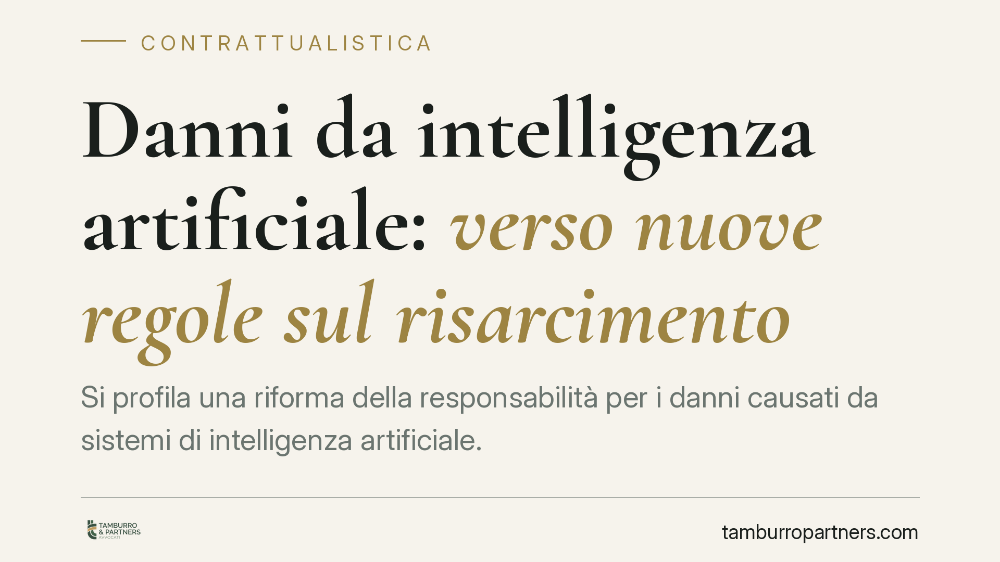

Danni da intelligenza artificiale: verso nuove regole sul risarcimento
Si profila una riforma della responsabilità per i danni causati da sistemi di intelligenza artificiale. Lo schema normativo attuativo della legge sull'IA introdurrebbe azione diretta verso l'assicuratore, agevolazioni sull'onere della prova e presunzioni sul nesso causale. Per imprese e assicurazioni cambia l'approccio a polizze, clausole di manleva e documentazione tecnica.

Il quadro in evoluzione
È in fase di attuazione una nuova disciplina in materia di responsabilità per i danni derivanti dall'impiego di sistemi di intelligenza artificiale. Le fonti che circolano fanno riferimento a un decreto legislativo attuativo della legge nazionale sull'IA (indicata come L. 132/2025), con efficacia annunciata per la seconda metà del 2026.
Occorre una premessa di metodo. Alla data di redazione, gli estremi esatti del provvedimento attuativo, il suo numero, gli articoli e la data di entrata in vigore non risultano ancora consolidati in Gazzetta Ufficiale. Trattiamo quindi la materia al condizionale: descriviamo l'impianto atteso, non un testo già vigente e definitivo. Sarà necessario verificare la versione pubblicata prima di trarne conseguenze operative vincolanti.
Il rapporto con la disciplina europea
La riforma nazionale non nasce in un vuoto. Si inserisce nel solco del Regolamento (UE) 2024/1689, il cosiddetto AI Act, che classifica i sistemi per livello di rischio e impone obblighi di trasparenza, documentazione e tracciabilità. Sul versante risarcitorio, il legislatore europeo aveva prospettato una direttiva sulla responsabilità da IA (proposta COM/2022/496), il cui percorso è rimasto incerto.
In questo contesto, l'intervento nazionale mira a colmare i punti scoperti: come si prova la colpa quando il funzionamento del sistema è opaco, e chi risponde lungo la catena che va dallo sviluppatore all'utilizzatore finale.
Le tre leve annunciate
Lo schema di riforma poggerebbe su tre meccanismi. Li richiamiamo con l'avvertenza che gli articoli puntuali andranno riscontrati sul testo definitivo.
Azione diretta verso l'assicuratore. Il danneggiato potrebbe agire direttamente contro la compagnia che assicura l'operatore del sistema, senza dover prima escutere quest'ultimo. È un modello già noto nella responsabilità civile auto, che qui verrebbe esteso al perimetro dell'IA.
Alleggerimento probatorio. Verrebbe attenuato l'onere in capo al danneggiato di dimostrare il difetto o la condotta colposa, tenuto conto della difficoltà tecnica di accedere alla logica interna dei sistemi.
Presunzione del nesso causale. In presenza di determinati presupposti, il collegamento tra il funzionamento del sistema e il danno potrebbe presumersi, con conseguente inversione, almeno parziale, dell'onere della prova a carico dell'operatore.
Contrattuale o extracontrattuale, e chi risponde
Il nodo centrale per chi si occupa di contrattualistica è duplice.
Primo: la natura della responsabilità. Nei rapporti tra imprese e clienti la fonte sarà spesso contrattuale, regolata dalle clausole del contratto di fornitura del sistema o del servizio; verso i terzi danneggiati prevarrà invece il regime extracontrattuale (art. 2043 e seguenti c.c.). La distinzione incide su prescrizione, onere probatorio e voci di danno risarcibili.
Secondo: il riparto lungo la filiera. Sviluppatore, distributore e utilizzatore professionale non hanno la stessa posizione. Chi progetta il modello risponde dei difetti di progettazione; chi lo integra e lo mette in uso risponde delle scelte di configurazione e di sorveglianza. Le clausole di manleva e le garanzie contrattuali diventano lo strumento per allocare questi rischi in modo esplicito, prima che sia un giudice a farlo.
Implicazioni per categoria
Imprese. Chi sviluppa, distribuisce o utilizza sistemi di IA dovrà rivedere contratti di fornitura, SLA e clausole di limitazione della responsabilità.
Assicurazioni. L'azione diretta impone di ridefinire massimali, esclusioni e perimetro delle coperture dedicate al rischio tecnologico.
Pubbliche amministrazioni. Chi impiega IA in procedimenti e servizi dovrà presidiare tracciabilità e documentazione delle decisioni automatizzate.
Danneggiati. Otterrebbero un percorso risarcitorio più accessibile, con minori barriere probatorie.
Cosa fare in concreto
- Mappate i sistemi di IA in uso o forniti, distinguendo il ruolo aziendale (sviluppatore, distributore, utilizzatore).
- Revisionate le clausole di manleva, garanzia e limitazione di responsabilità nei contratti con fornitori e clienti.
- Verificate le polizze esistenti: coprono il rischio IA e reggono all'ipotesi di azione diretta?
- Organizzate la documentazione tecnica (log, versioni, test, valutazioni di rischio) in ottica difensiva.
- Monitorate la pubblicazione del testo definitivo in Gazzetta Ufficiale prima di modificare i contratti.
La preparazione documentale, più che la formula assicurativa, sarà il vero discrimine.
Disclaimer
Contributo informativo a cura di Tamburro & Partners - Avv. Giuseppe Tamburro. Non costituisce parere legale.
Ogni contratto ha il suo equilibrio.
Se vuoi una revisione delle clausole o una redazione su misura, scrivi allo studio. Ti rispondiamo entro un giorno lavorativo.